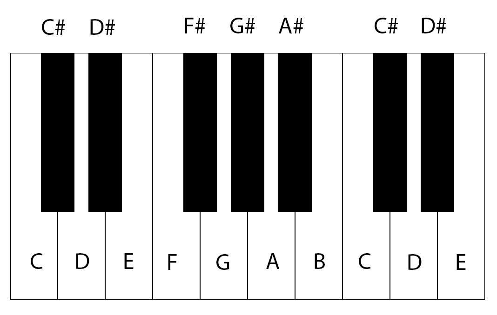

Music is written on a set of five lines called a stave.
The symbol at the beginning of the five lines is called a treble clef, which is used to denote a set of higher pitched musical notes together. There are other kind of clefs used in music like the bass clef shown below. The bass clef unlike the treble clef is used to group together a set of lower pitched notes together.
The following image shows the various notes on the treble clef. Below are the pitch of the notes starting from the left to the right.
Note:The second note, i.e C is also called 'middle C' and it carries significance in the musical world which will be clear as we proceed.
The following image shows the various notes on the bass clef. Below are the pitch of the notes starting from the left to the right.
Now perhaps the significance of the middle C can be seen. It lies midway between the treble and the bass clef and this 'ledger line' somehow binds the two clefs together.
So the next question that will come is how are we determining for what duration each note will be played. Here's where note values come into play. At this level, the various note values which will be introduced are-
Duration of a note is measured in the form of beats. If we take the 'crotchet' or the quarter note to be one beat, then we can define the various note values as follows
A semibreve lasts for 4 crotchet beats.
A minim lasts for 2 crotchet beats.
A crotchet lasts for 1 crotchet beat, of course!.
A quaver lasts for half a crotchet beat.
Sometimes a dot is put after a note which increases its duration by half of its value. For example:
Here the dotted minim will last for 3 crotchet beats (2+1)
NB:If at this level, any mention of beat basis is not given, assume it to be in terms of crotchet beats only.
A semibreve rest lasts for 4 crotchet beats.
A minim rest lasts for 2 crotchet beats.
A crotchet rest lasts for 1 crotchet beat.
A quaver rest lasts for half a crotchet beat.
On a keyboard you might notice that there are black keys in between certain white notes. They help in raising the notes a 'semitone' above from the previous white key or lowering down a semitone from the next adjacent white key.
A flat sign before a note lowers the note by a semitone as shown below (E- Eflat)
A sharp sign before a note raises the note by a semitone as shown below (D- Dsharp)
Here's how the keys layout are on a keyboard or piano.
Notice that there are no black keys between C and D, and hence as per how we have defined semitones, D is one semitone above C. The same goes with E and F, and hence one semitone below F is E. In short E-sharp==>F and B-sharp==> C
